I'm a robotics engineering student at Worcester Polytechnic Institute, class of 2028, from Monroe Township, New Jersey. I design hardware in SolidWorks and KiCad and write code in Python, C++ and MATLAB. Past projects include a TI-84 calculator rebuilt around a custom PCB with mechanical switches, a 2.1 channel speaker, and a six-GPU mining rig. Write-ups for each are under works.
Please direct all inquiries to: krishsaxx@gmail.com
Custom KiCad PCB, mechanical keyboard switches, 3D-printed case and screen bezel, TI-84 Plus CE keypad board, screen and battery.
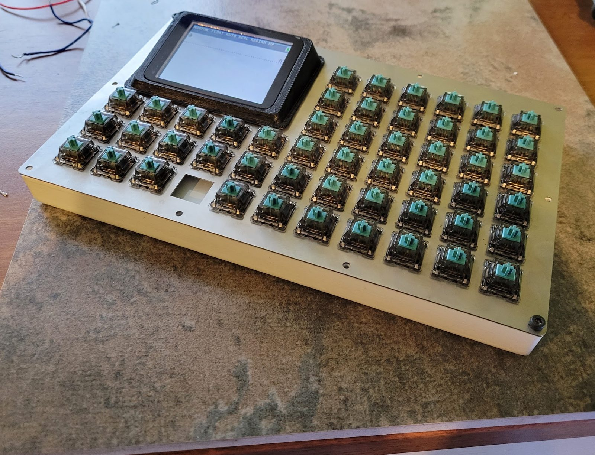
A TI-84 Plus CE, rebuilt as a mechanical keyboard. Every key press goes through a mechanical switch on a circuit board I designed, but the calculator itself is unchanged underneath: its own processor, its original screen, its original rechargeable battery.
This is the project I'm proudest of because it needed three disciplines at once. The PCB had to be laid out in KiCad, the case and bezel had to be modeled in CAD around that board and the calculator's parts, and the two had to be joined electrically by hand-soldering into the calculator's keypad.
How a key press reaches the calculator
The calculator doesn't read each key on its own wire. Its keys sit on a grid of row and column lines, and pressing a key connects one row to one column. The calculator scans the grid and works out which key was pressed from that pair. The TI-84 Plus CE's keypad board has exposed, solderable pads for these lines.
My PCB rebuilds that same grid with mechanical switches and brings every line out to one pin header, labeled on the silkscreen as r1–r7 and c1–c8, plus a separate pair for the ON key, which sits outside the matrix. Wires run from the header to the matching pads, so the calculator scans the new switches exactly as it scanned its original keys.
Pick any switch in the grid to see which row and column lines it connects.
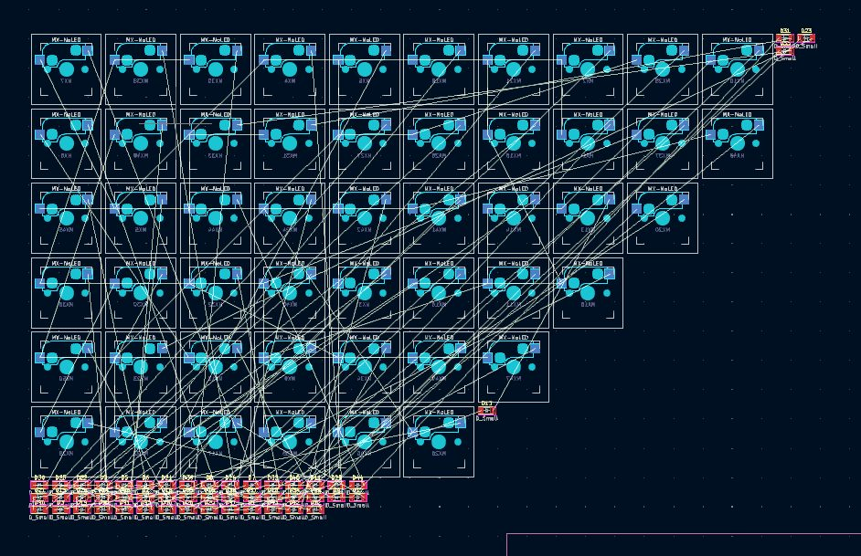
Schematic in KiCad: the switch grid with its row and column nets.
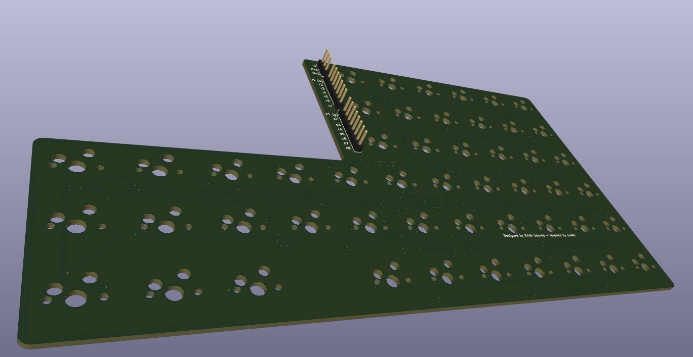
3D render of the board. The L-shape leaves room for the screen; the header carries every row, column and the ON pair.
Case and bezel
The case and screen bezel were modeled in CAD around three things that couldn't move: the PCB's switch positions, the original TI-84 screen, and the calculator's battery. The battery stays inside and connected, so the finished build still charges like a normal TI-84. Parts were printed on a Prusa printer and test-fitted against the plate and board before wiring.
Build log
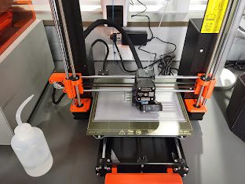
16 Feb 2022. Printing the first case parts.
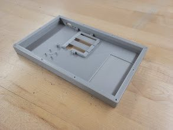
17 Feb 2022. First print of the case tray, with mounts for the calculator's internals.
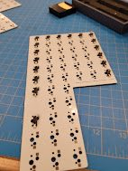
8 Mar 2022. Checking the L-shaped outline and switch hole pattern at full scale.
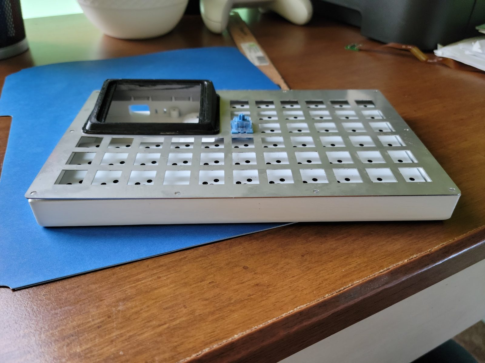
8 Mar 2022. Case, plate and bezel assembled, ready for switches.
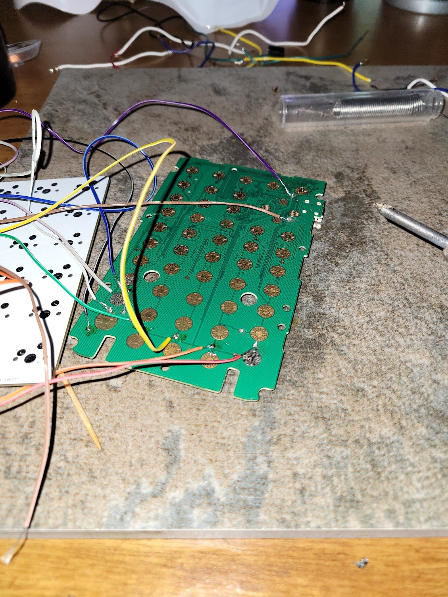
23 Mar 2022. Soldering wires from the PCB header to the row and column pads on the TI-84's keypad board.
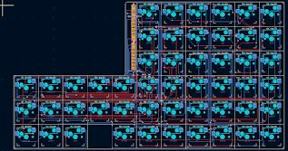
PCB layout in KiCad, routing every switch back to the header.
15/32" plywood, Dayton Audio SD215A-88 8" subwoofer, two SB Acoustics 3" full-range drivers, TPA3116D2 2.1 amplifier board, 24 V 6 A supply, ~150 Hz bass blockers.
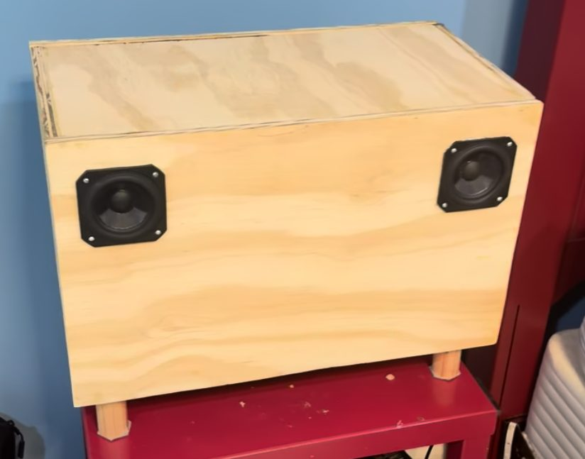
A powered 2.1 speaker for the house, built for under $300 with a jigsaw, a circular saw and cutting guides. A down-firing 8-inch subwoofer sits in a sealed lower chamber; two full-range drivers sit up front in their own sealed boxes; the amplifier and wiring live behind a magnetic rear panel.
Next to a JBL Xtreme 5, it has far more bass and clearer vocals, mostly because of the drivers. The bass was strong enough that it had to be turned down to blend with the front drivers.
Design
The cabinet is 18.5 × 11.5 × 10 inches, split into three sections.
Lower sub chamber: sealed. The Dayton 8" fires down into the gap under the cabinet. Internal dowels brace it against vibration.
Front driver boxes: each SB Acoustics driver has its own small sealed box, so the sub's pressure can't push on the small cones. Bass blockers cut their low end at about 150 Hz.
Rear electronics bay: amp board, barrel jack and 3.5 mm input behind a magnet-mounted service panel, so repairs never mean opening the sub chamber.
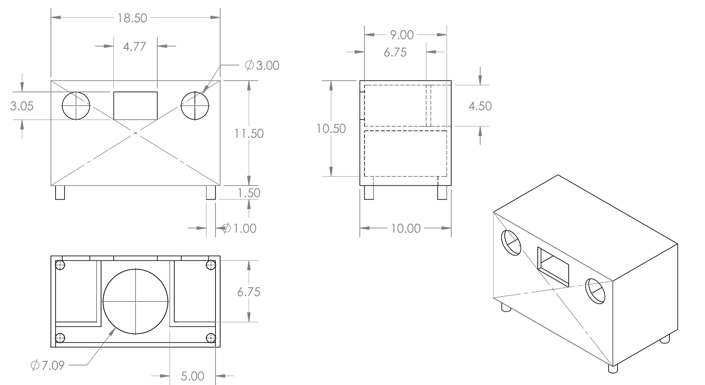
Box_rev1 in SolidWorks, inches.
The Raspberry Pi that didn't make it
The first plan was an all-in-one media center: a Raspberry Pi inside the cabinet, powered from the same barrel jack through a buck converter, with a now-playing screen. I wrote that screen in Python with Spotipy and CustomTkinter. It showed album art, track, artist, progress and playback controls over a gradient taken from the album art's colors.
Running Spotify locally on the Pi turned out not to be practical, so I cut it. The final build is simpler, more reliable and easier to carry.
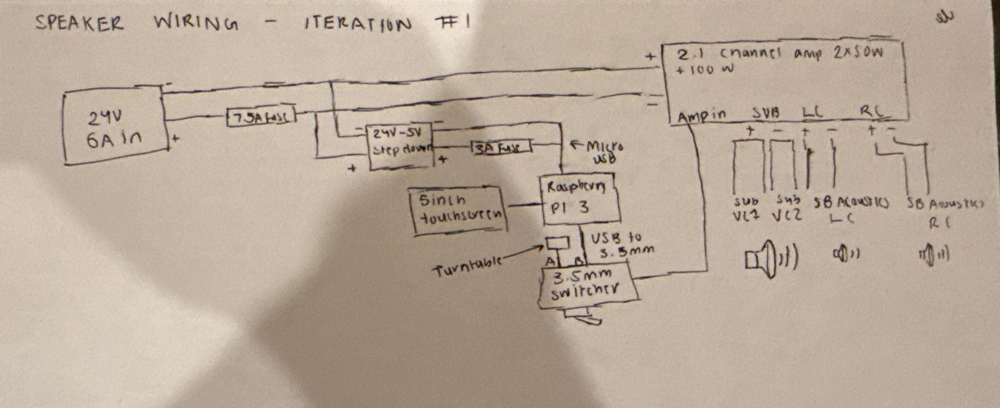
Wiring, iteration #1: the 24 V supply split to the amp and, through a buck converter, to the Pi.
Build log
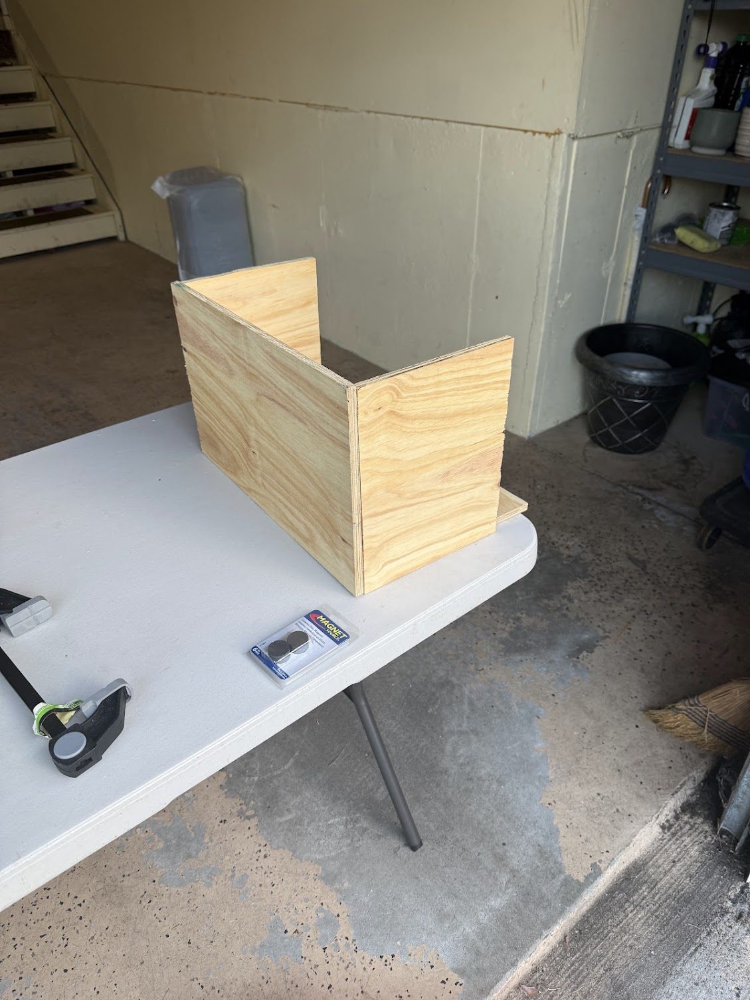
First panels cut and aligned to check for squareness.
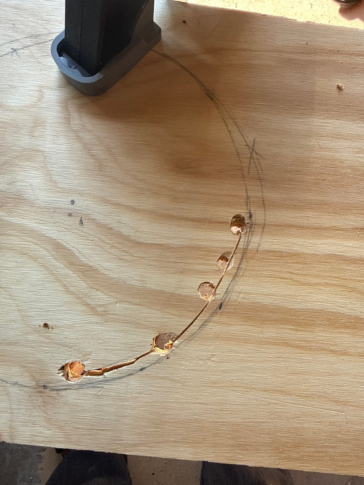
Cutting the lower subwoofer hole.
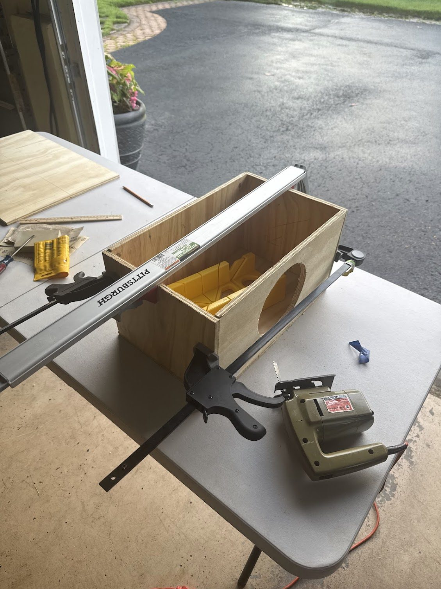
Gluing the four sides of the enclosure.
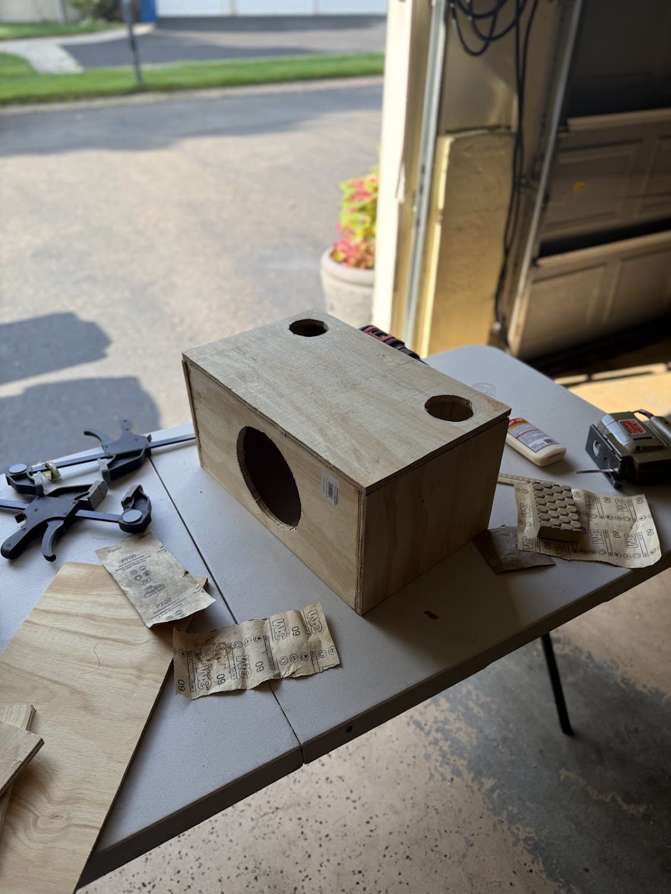
Front panel cut and test-fit for the full-range drivers.
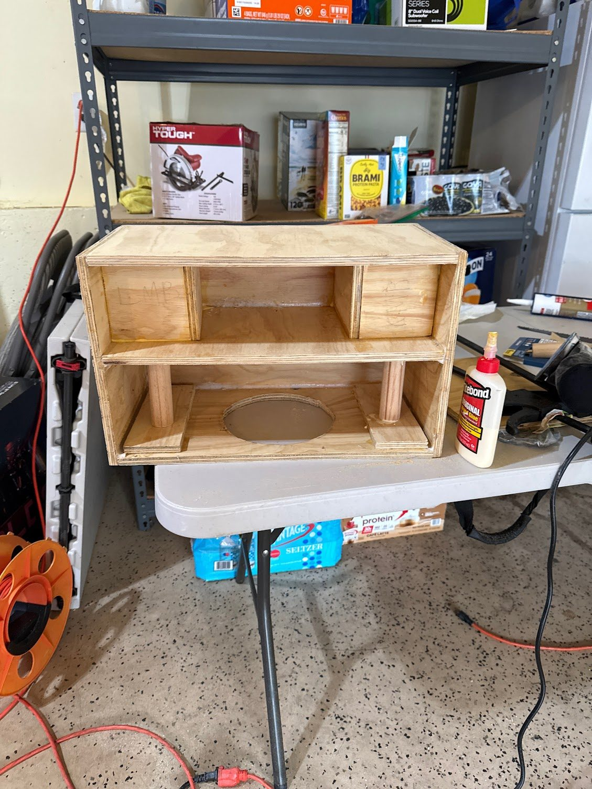
Driver boxes added, and dowels to brace the sub chamber.
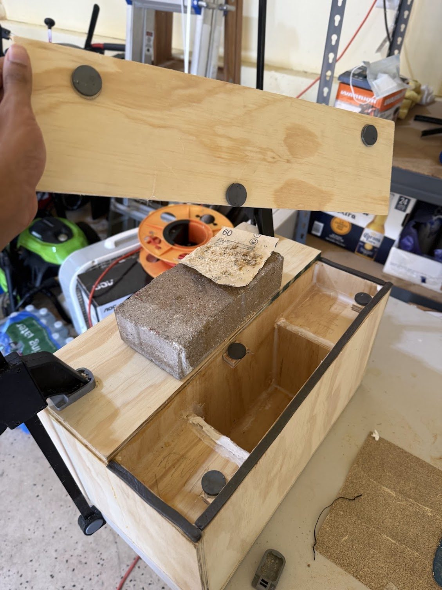
Sub chamber sealed; magnets set into the rear service panel.
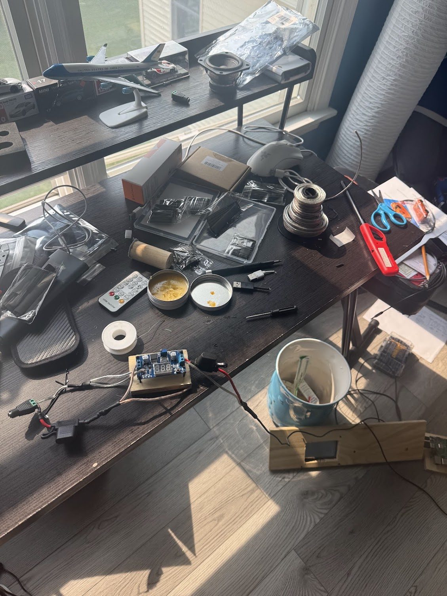
Testing the amp and the buck converter for the Pi.
What I learned
Sealed enclosure design and construction
Driver wiring and polarity
Passive high-pass filtering with bass blockers
Strain relief, and chasing down rattles and air leaks
LIDAR gives precise, dense geometry but degrades in rain, fog and snow. RADAR is coarse but keeps working in bad weather. Over a summer at Temple's Imaging & Sensing Lab I worked on combining the two so an object detector could stay accurate across weather conditions.
I wrote signal processing in Python and MATLAB, including beamforming and noise reduction, to clean up the sensor returns before fusion. I then scaled the detection pipeline to handle denser point clouds: by combining returns from both sensors, throughput went from 300,000 to 600,000 points per second.
Open-air frame, six ZOTAC RTX 3070 / 3070 Ti / 3080 cards, EVGA power supply, PCIe risers, rack-mount UPS, dedicated 20 A circuit, Hive OS, Hiveon Pool.
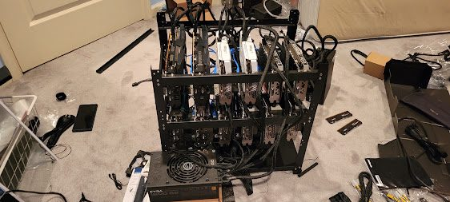
An Ethereum mining rig built with a friend during the 2021 crypto boom, while Ethereum was still proof-of-work. The hardest part was getting cards at all: GPUs were scarce, so we set up an automated alert service that pinged us when specific cards were listed, and bought new and used cards the moment they appeared. Roughly a dozen cards, about $5,000 in hardware.
The rig ran on Hive OS, managed remotely, and mined through Hiveon Pool for steady payouts. It held around 344 MH/s on the rig (393.71 MH/s reported by the pool) with cards between 37 and 64 °C. It ran until the Merge in September 2022, when Ethereum moved to proof-of-stake and GPU mining ended.
Tuning
Ethereum's hashing depends on memory speed far more than core speed, so each card got raised memory clocks with lowered core clocks and power limits. Cards were tuned one by one, several were flashed with custom VBIOSes for tighter memory timings, and software got the LHR (Lite Hash Rate) cards close to their full rate.
GPU
Card
Memory
MH/s
0
RTX 3070 Ti, 8 GB
Micron GDDR6X
40.50
1
RTX 3070, 8 GB
Samsung GDDR6
31.36
2
RTX 3070 Ti, 8 GB
Micron GDDR6X
39.69
3
RTX 3070 Ti, 8 GB
Micron GDDR6X
38.99
4
RTX 3080, 10 GB
Micron GDDR6X
45.94
5
RTX 3070, 8 GB
Samsung GDDR6
30.71
Power
At roughly 2,000 W the rig was too much for a normal household circuit. We ran a dedicated line and moved it from a 15 A to a 20 A breaker, then added a rack-mount UPS so short outages wouldn't crash the rig.
Build log
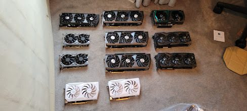
The cards laid out before installation.
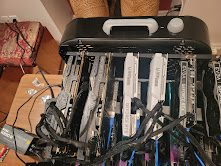
Top view, cards installed and connected.
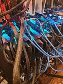
Each card needs its own power and data runs.
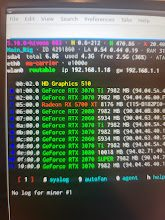
Terminal check: every GPU detected.
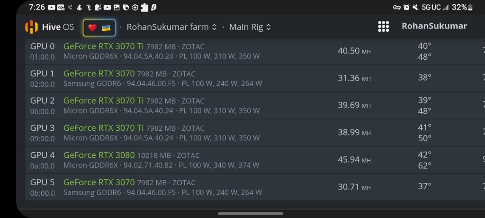
Per-card hash rate, temperatures and power limits in Hive OS.
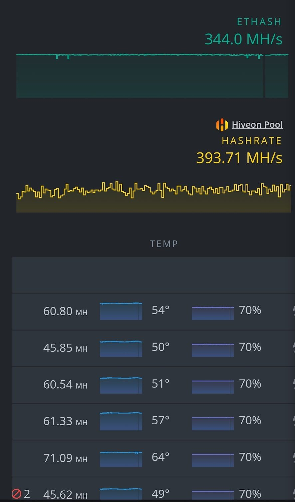
Hive OS dashboard: a flat hash-rate graph, meaning tuning, cooling and power were all holding.